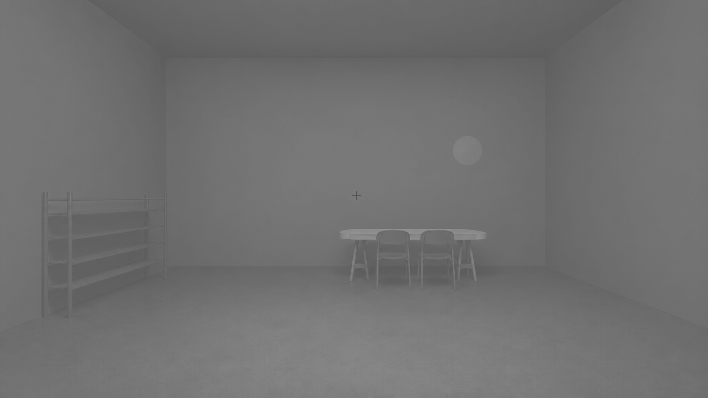

The experiment uses the supplied stereoscopic room image without altering its geometry, furniture arrangement, headset mask, or left–right alignment. The room, table, chairs, and shoe rack are recoloured from the specified CIELAB targets while retaining their original light and shade differences.
| Phase | Duration |
|---|---|
| Initial neutral grey baseline | 90 seconds |
| Neutral grey baseline before every condition | 30 seconds |
| Colour-room exposure | 150 seconds |
| Conditions | 17, fixed order |
Before starting: place the phone in landscape orientation, raise screen brightness to the predetermined experimental level, disable automatic brightness and colour-temperature adjustments, and use the same display settings for every participant.
| No. | Condition | L* | a* | b* |
|---|

The event log includes phase onsets, offsets, actual durations, condition numbers, and CIELAB values.